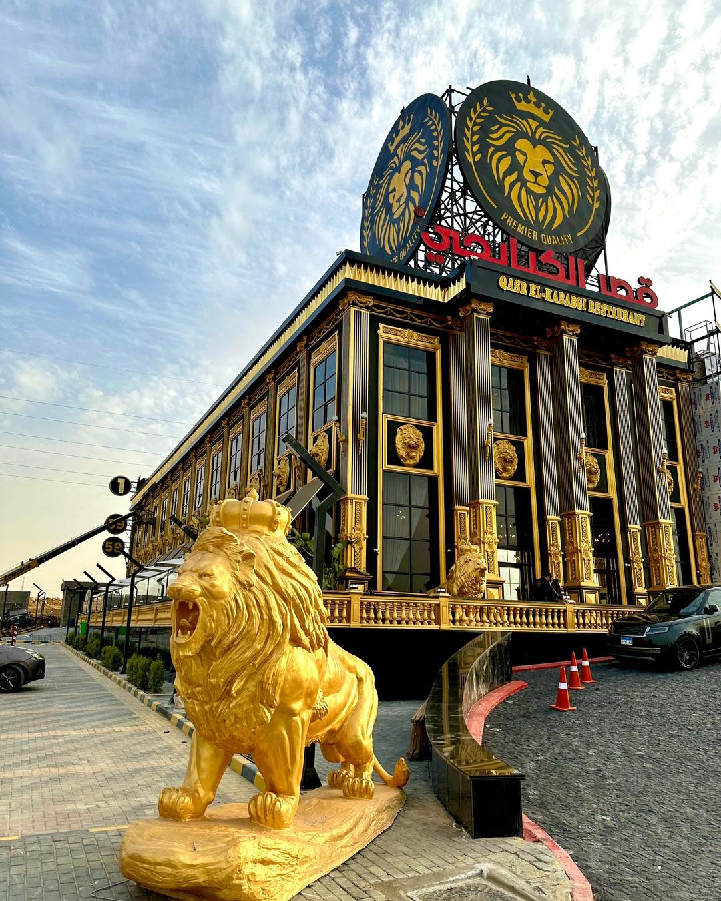

قصر الكبابجي هو واحد من أبرز المطاعم في مصر، معروف بتقديمه للمأكولات الشرقية والمصرية الأصيلة بجودة عالية.
يتميز المطعم بتنوع قائمة طعامه التي تشمل المشاوي المتنوعة مثل الكباب والكفتة، بالإضافة
إلى الطواجن والمقبلات الشهية. يُقدّم قصر الكبابجي تجربة طعام فاخرة، حيث يُستخدم في تحضير الأطباق
مكونات عالية الجودة تتوافق مع المعايير الصحية العالمية، وتخضع لمراقبة بيطرية من خلال مزارع خاصة تابعة للمطعم.
يضم قصر الكبابجي عدة فروع في مصر، منها:
فرع التجمع الخامس: شارع التسعين الشمالي بعد نادي بتروسبورت، بجوار جوميا مصر مول رقم 258.
فرع الشيخ زايد: مدخل الشيخ زايد 4، مول بوليفارد الممشى السياحي، طريق وصلة دهشور.
فرع الساحل الشمالي: طريق إسكندرية مطروح، أمام بوابة مارينا 5.
فرع الطريق الزراعي: كيلو 104، مدخل كوبري كفر الزيات دفرة الحر.
للتواصل مع المطعم أو طلب خدمة التوصيل، يمكن الاتصال بالخط الساخن الموحد: 15959.

صينيه موزه ضاني بالفته ولا زند ضاني مع رز خلطه ومحاشي ؟ 💥 نص كفته هديه على كل كيلو
لعشاق العزومات و اللمه ❤️ صواني قصر الكبابجي تسد معاك 😋💪🏻
😋💪🏻عرض الصحاب صينيه تكفيك انت واصحابك